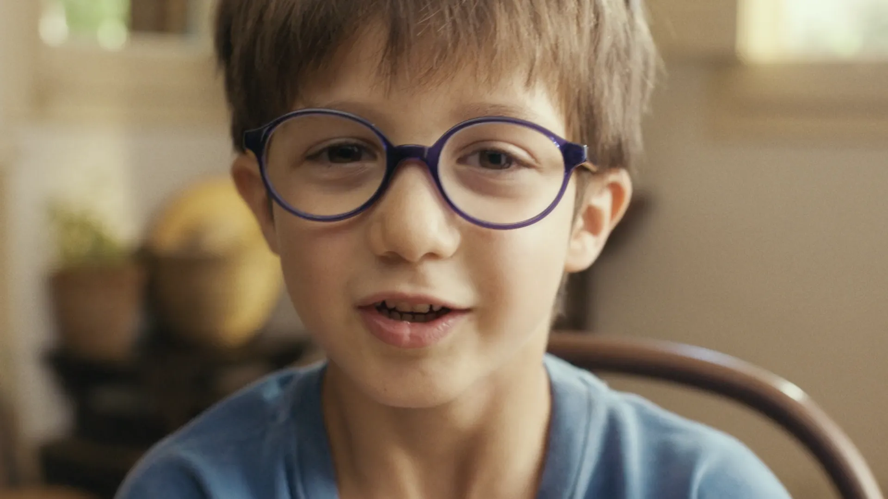
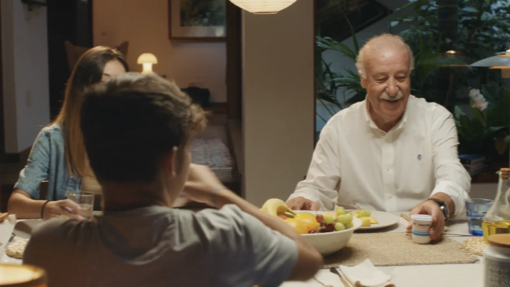
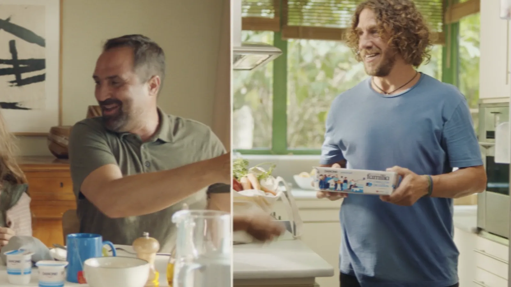
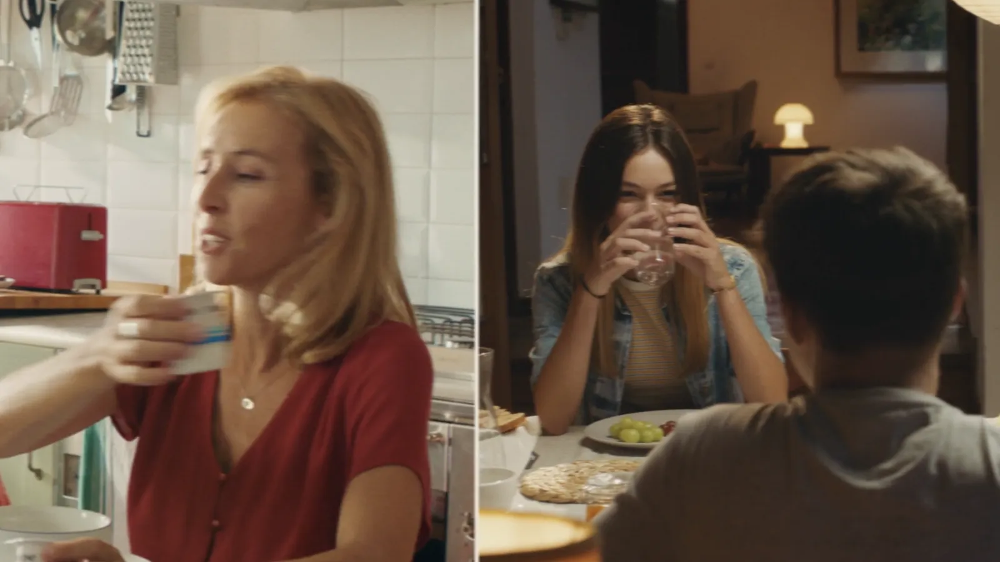
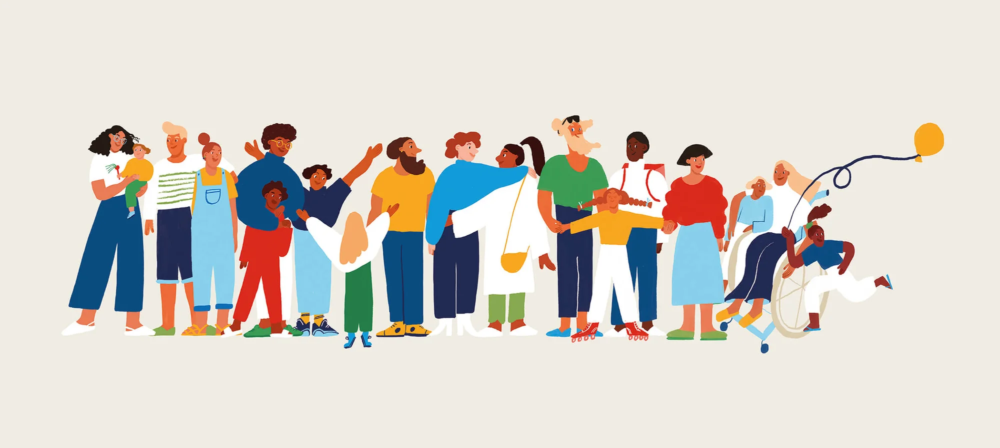
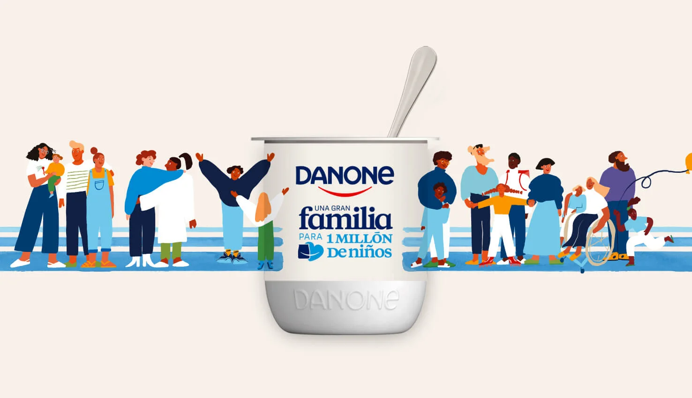
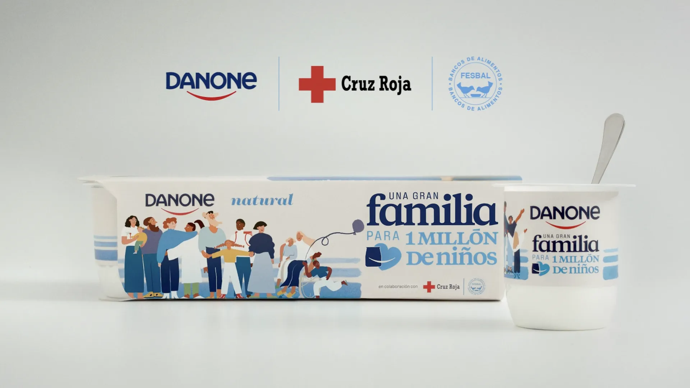

One big family.

Danone. One big family. TV spot
Play 0:20- Client
- Danone
- Agency
- Wunderman Thompson (now VML)
- My role
- Senior art director, creative team
- Media
- TV spot, special edition pack and website
The challenge
Launch #UnaGranFamilia, the initiative through which Danone, together with the Red Cross and the Spanish Federation of Food Banks, set out to help provide healthy food for one million vulnerable children. It was 2020, in the middle of the health crisis.
The idea
A very simple question, asked straight to people. If we share the way only families share, the table can be as big as it needs to be.
The spot
How big
is your family?
Different families at different tables, joined by one gesture: passing the yogurt from one home to the next. With Vicente del Bosque, Carles Puyol and volunteers from the Red Cross and FESBAL. Produced by El Cangrejo.
Stills



The pack
A special edition family pack, illustrated by Violeta Noy. Buying it was a way to join in.


And on unagranfamilia.es, every family could create a joint avatar and join the movement.
Pack and website

“Healthy food for children should be a right, now and always. And feeding someone is the greatest gesture of love.”
Javier Pejito, VP of Marketing, Danone Spain
- Executive creative direction
- David Caballero, Pipo Virgós, Paco Badía
- Creative direction
- Dalmau Oliveras
- Creative team
- Fernando Valdés, Elda Farran, Carlos Moyano, Iñigo Pereda
- Illustration
- Violeta Noy
- Production company
- El Cangrejo
- Directed by
- Dani Resines and Roger Gómez
- Director of photography
- Oriol Vila
- Post-production
- Potato and Pijama
Next project